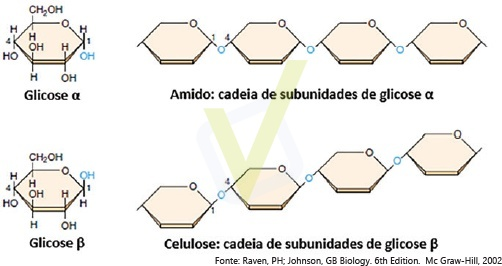

A figura a seguir ilustra a composição de dois carboidratos, o amido e a celulose.

As afirmativas a seguir dizem respeito a esses compostos.
I – Tanto o amido quanto a celulose são considerados polissacarídeos.
II – Pelo fato de ambos serem constituídos por monômeros de glicose, amido e celulose são hidrolisados pelas mesmas enzimas digestórias.
III – As configurações moleculares diferentes da glicose α e glicose β resultam em biopolímeros diferenciados: enquanto o amido serve de reserva de energia, a celulose forma fibras de grande importância estrutural nas plantas.
Está CORRETO o que se afirma
a)em II, apenas.
b)em I e III, apenas.
c)em II e III, apenas.
d)em I, II e III.